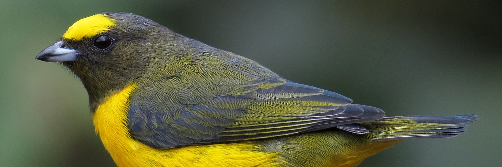
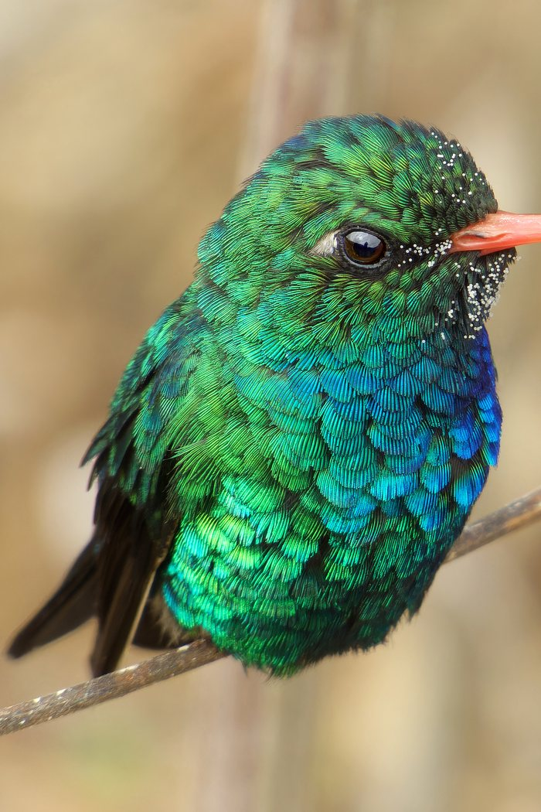

Consultando dados da empresa…
CNPJ inválido.
Confira os números digitados e tente novamente.
CNPJ não encontrado.
Não localizamos nenhuma empresa com este número.
Não foi possível concluir a consulta.
O serviço de dados está indisponível no momento. Tente novamente em alguns instantes.

🌿 conservação Asas da Natureza
Consulta cadastral
—
—
Dados da empresa
- CNPJ
- —
- Razão social
- —
- Nome fantasia
- —
- Situação cadastral
- —
- Data de abertura
- —
- Natureza jurídica
- —
- Porte
- —
- Capital social
- —
- Data da situação cadastral
- —
Endereço
- Logradouro
- —
- Número
- —
- Complemento
- —
- Bairro
- —
- Município
- —
- UF
- —
- CEP
- —
Atividades (CNAE)
- CNAE principal
- —
- Descrição da atividade principal
- —
Atividades secundárias
Quadro societário
Não foram encontrados sócios disponíveis para este CNPJ.
Inscrição estadual
Consultando inscrição estadual…
Inscrições estaduais encontradas
Não foi localizada Inscrição Estadual disponível para este CNPJ.
Consultando inscrição estadual…
Informe ao menos um campo para consultar.
Não foi possível concluir a consulta.
O serviço de dados está indisponível no momento. Tente novamente em alguns instantes.
Inscrições estaduais encontradas
Não foi localizada Inscrição Estadual disponível para este CNPJ.

🌿 conservação Asas da Natureza